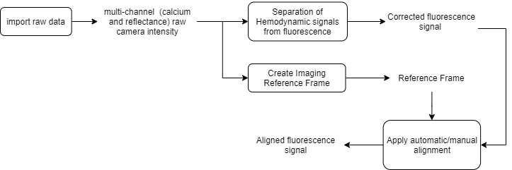

Here, we show how to perform automatic and manual image registration in order to align different recording sessions from a given subject. This process is useful for longitudinal studies where different animals are imaged several times over the course of the experiment.
In this example you will learn:
The raw data consists of multi-channel (fluorescence and reflectance) recordings of an anesthetized mouse expressing GCaMP6 calcium indicator in cortical neurons. The data that we will align consists of four resting state recordings (see this tutorial to learn how to process resting state data) of one mouse acquired over a period of 2 months. Here is the processing workflow of this example:
Recording alignment workflow

Important
The automatic and manual alignemnt tools are currently available only in the main GUI (umIToolbox)!
Here, we assume that the project file was created. For more info on how to create a project file click here. To open a project file, call the umIToolbox app with the full path to your project file as input as:
umIToolbox('C:/FOLDER/projectfile.mat');
In the main GUI,